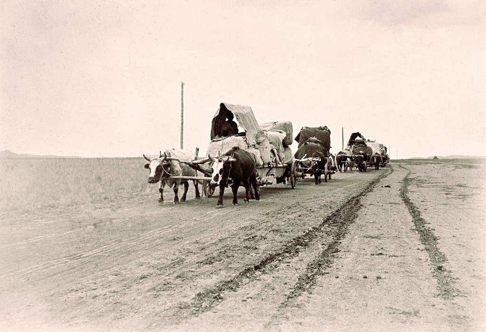
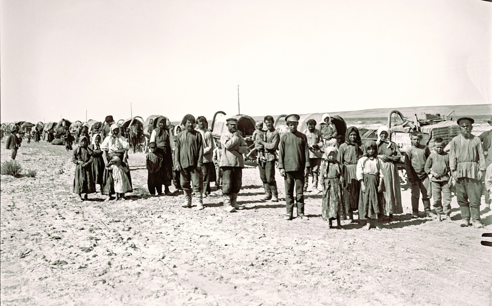
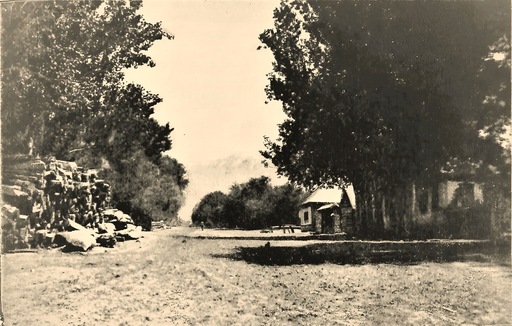

Справочник родов · станица Голубевская (Борохудзир)
Места исхода родов Голубевской
Откуда переселялись семьи, основавшие и населявшие станицу Голубевскую: крестьяне Богородской волости Томской губернии (переселения 1871 и 1876 годов), казаки Кокчетавского уезда (1880) и другие. Терракотовая точка - сама станица, тёмные точки - места исхода; клик по точке показывает роды.
{kind=link}

{kind=link}

{kind=link}

- Богородская волость, Томский уезд и губерния (на карте - примерно, уровень уезда)
- Арык-Балык, Кокчетавский уезд
![]() карточка НП на Familio →роды: Головины (1902 г.), Литвиновы (1902 г.), Семеновы (1902 г.), Симаченкоы (1890 г.), Тихоненкоы (1902 г.)
карточка НП на Familio →роды: Головины (1902 г.), Литвиновы (1902 г.), Семеновы (1902 г.), Симаченкоы (1890 г.), Тихоненкоы (1902 г.) - Муры, Богородская волость, Томский уезд и губ. карточка НП на Familio →роды: Грачевы (1876 г.), Димитриевы (1871 г.), Карповы (1871 г.), Меньшевы (1871 г.), Синицыны (1876 г.)
- Маркелово, Богородская волость, Томский уезд и губ. карточка НП на Familio →
- Лобановская, Кокчетавский уезд, Туркестан карточка НП на Familio →роды: Ольховы (1880 г.), Твердохлебовы (1880 г.)
- Острогожский уезд, Петренко (на карте - примерно, уровень уезда)
- Акмолинск карточка НП на Familio →роды: Зенченкоы
- Воронежская область "Бабушка говорила, приехали с Дона. Донские казаки." (на карте не показано)роды: Афанасьевы
- Зарайский уезд, Рязанская губерния (на карте - примерно, уровень уезда)роды: Добрынины
- Малонарымский редут, Иртышская линия (между Усть-Каменогорском и Нарымом) (на карте не показано)роды: Верегины
- Метлякова (Маклякова, Максакова), Тобольская губерния (на карте - примерно, уровень уезда)роды: Комаровы
- Тобольская губерния (на карте - примерно, уровень уезда)роды: Русаковы (1874 г.)
- Тобольская губерния, Ялуторовский уезд, Таповая и Выползовая (на карте - примерно, уровень уезда) карточка НП на Familio → Выползовая на Familio →роды: Тютявины
- Ушаковское, Катайский муниципальный район, Курганская область карточка НП на Familio →роды: Мотовиловы
Полная таблица: «Борохудзир - генеалогическая реконструкция» (доступ после простой регистрации). Данные - семейная таблица переселений и приказы о переселении крестьян Томской губернии
(30.12.1876) и «Дело о перечислении в Семиреченскую область 121 крестьян Томской губернии»
(1871). Если вы знаете место исхода рода, которого здесь нет -
напишите генеалогу-исследователю.